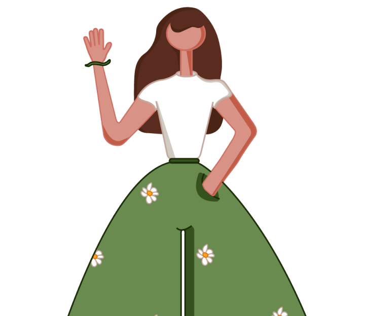

<link
  href="https://cdn.jsdelivr.net/npm/bootstrap@5.3.3/dist/css/bootstrap.min.css"
  rel="stylesheet"
/>
<link rel="stylesheet" href="style.css" />
<link
  href="https://cdn.jsdelivr.net/npm/aos@2.3.4/dist/aos.css"
  rel="stylesheet"
/>
<!-- Custom Navbar -->
<nav
  class="navbar custom-navbar navbar-expand-lg py-3"
  data-aos="fade-down"
  data-aos-delay="200"
  data-aos-duration="1000"
>
  <div class="container">
    <!-- Left: Brand -->
    <a class="navbar-brand" href="index.html">
      <span>Afra</span>
      <span>Tetlay</span>
    </a>

    <!-- Right: Links -->
    <div class="ms-auto navbar-nav d-flex flex-row align-items-center gap-5">
      <a class="nav-link" href="about.html">About</a>
      <a class="nav-link" href="case-studies.html">Case Studies</a>
      <a class="nav-link pill-button" href="get-in-touch.html">Get in Touch</a>
    </div>
  </div>
</nav>

<section class="hero-section py-5">
  <div class="container">
    <div class="row align-items-center">
      <!-- Text Side -->
      <div
        class="col-md-6 mb-4 mb-md-0"
        data-aos="fade-right"
        data-aos-delay="200"
        data-aos-duration="1000"
      >
        <h1 class="display-4 fw-bold heading-primary">Hello,</h1>
        <p class="lead">
          I am a dedicated and enthusiastic professional with a solid foundation
          in web design, having completed a comprehensive Google UX Design
          course.<br />
          My background includes hands-on experience with HTML,CSS and JS, which
          has equipped me with the technical skills necessary for creating
          responsive and visually appealing websites. Additionally, I am
          proficient in using Figma, a leading design tool, and the Adobe
          Creative Suite, to create wireframes, prototypes, and high-fidelity
          designs.<br />
          Driven by a passion for user-centered design, I am eager to pursue a
          career in UX/UI design. I am excited about the opportunity to apply my
          skills and knowledge to create intuitive and engaging user
          experiences, and I am confident that my background and commitment to
          continuous learning will make a valuable contribution to your team.
        </p>
      </div>

      <!-- Image Side -->
      <div
        class="col-md-6 text-center"
        data-aos="fade-left"
        data-aos-delay="200"
        data-aos-duration="1000"
      >
        
      </div>
    </div>
  </div>
</section>
<footer class="text-center py-3 bg-dark text-white">
  &copy; <span id="year"></span> Afra Tetlay. All rights reserved.
</footer>
<!-- AOS JS -->
<script src="https://cdn.jsdelivr.net/npm/aos@2.3.4/dist/aos.js"></script>
<script>
  AOS.init({
    once: true, // only animate once
  });
</script>
